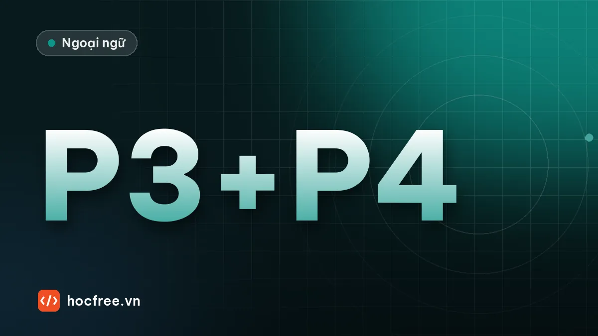

Luyện tập TOEIC Part 3–4 với transcript và cách chữa bài
Bốn hội thoại và hai bài nói tự biên soạn kiểu Part 3–4 có câu hỏi, đáp án, transcript đánh dấu câu chứa đáp án và quy trình chữa bài 4 bước.

Học xong bài này, bạn sẽ
- Áp dụng đọc trước câu hỏi với bài hội thoại thật
- Chữa bài theo transcript, tìm câu chứa đáp án
- Ghi paraphrase mới vào sổ
Nên học trước: Shadowing: nghe nhanh và quen giọng Mỹ, Anh, Úc, Canada
Bài thực hành này gồm 4 hội thoại kiểu Part 3 và 2 bài nói kiểu Part 4 do HọcFree tự biên soạn, tổng cộng 18 câu hỏi. Vì trang web không có audio, bạn hãy tạo audio trước, làm câu hỏi khi chưa xem transcript, rồi chữa bài theo quy trình 4 bước ở cuối. Sau bài này, hãy áp dụng đúng quy trình chữa bài đó cho các đề có audio thật.
Chuẩn bị
- Nhờ một người đọc transcript cho bạn nghe, hoặc dùng tính năng Đọc to (Read aloud) của Microsoft Edge với giọng tiếng Anh, tốc độ bình thường.
- Nếu dùng giọng máy, hãy để người khác chép transcript vào một file riêng, hoặc tự dán mà không đọc nội dung.
- Với mỗi bài: đọc trước 3 câu hỏi, nghe một lần, tô đáp án ngay khi nghe.
Câu hỏi
Hội thoại 1
1. What are the speakers mainly discussing? (A) A hiring plan (B) A product launch (C) A training course (D) An office move
2. What does the man say about the budget? (A) It has been reduced. (B) It must be approved. (C) It is larger than last year's. (D) It includes travel costs.
3. What will the woman do next? (A) Contact a manager (B) Revise a schedule (C) Book a venue (D) Interview a candidate
Hội thoại 2
4. Where most likely are the speakers? (A) At a bank (B) At a hotel (C) At a train station (D) At a restaurant
5. What problem does the woman have? (A) Her room is not ready. (B) She lost her key card. (C) Her reservation cannot be found. (D) She was charged twice.
6. What does the man offer? (A) A free breakfast (B) A room upgrade (C) A taxi service (D) A refund
Hội thoại 3
7. Why is the woman calling? (A) To place an order (B) To ask about a delivery (C) To cancel a meeting (D) To complain about quality
8. What does the man mean when he says, "The truck left at eight"? (A) The driver started work late. (B) The delivery should arrive soon. (C) The order was sent to the wrong address. (D) He cannot change the delivery time.
9. What does the man ask the woman to do? (A) Sign for the goods (B) Send a photo (C) Call him back (D) Check the warehouse
Hội thoại 4 (có hình)
| Package | Monthly price | Users |
|---|---|---|
| Basic | $20 | Up to 5 |
| Standard | $45 | Up to 15 |
| Business | $80 | Up to 30 |
| Enterprise | $150 | Unlimited |
10. What are the speakers planning to buy? (A) Office furniture (B) Software subscriptions (C) Mobile phones (D) Training sessions
11. Look at the graphic. Which package will the speakers most likely choose? (A) Basic (B) Standard (C) Business (D) Enterprise
12. What does the woman suggest? (A) Asking for a free trial (B) Waiting until next year (C) Comparing other companies (D) Reducing the number of users
Bài nói 5
13. Who most likely is the speaker? (A) A tour guide (B) A factory manager (C) A safety inspector (D) A hotel receptionist
14. What are the listeners asked to do? (A) Wear safety glasses (B) Turn off their phones (C) Stay with the group (D) Sign a form
15. What will the listeners see at the end of the tour? (A) A packaging area (B) A product display (C) A testing laboratory (D) A video presentation
Bài nói 6
16. What is being advertised? (A) A cleaning service (B) A furniture store (C) A moving company (D) An office supply shop
17. What is special about the business? (A) It is open 24 hours. (B) It offers same-day service. (C) It has been in business for 30 years. (D) It uses eco-friendly products.
18. How can customers get a discount? (A) By ordering online (B) By mentioning the advertisement (C) By signing a one-year contract (D) By referring a friend
Transcript (mở sau khi làm xong)
Xem transcript
Hội thoại 1
W: Minh, have you seen the plan for hiring the new quality engineers? I'd like to start interviews in March.
M: I read it yesterday. It looks good, but the budget needs to be approved by the director before we can post the job ads.
W: Right. I'll e-mail Ms. Park this afternoon and ask if she can review it this week.
Hội thoại 2
W: Hello, I'm checking in. My name is Sarah Chen, and I booked a double room for two nights.
M: Welcome, Ms. Chen. I'm sorry, but our cleaning staff are still preparing your room. It should be ready in about an hour.
W: Oh, I have a meeting at two, and I was hoping to change first.
M: I understand. To make up for it, I can move you to a suite on the top floor at no extra charge. That one is ready now.
Hội thoại 3
W: Hi, this is Linh from Saigon Packaging. We were expecting your delivery of cardboard this morning, but nothing has arrived yet.
M: Let me check… The truck left at eight.
W: Oh, so it's on the way?
M: Yes, it's probably stuck in traffic. When it arrives, could you take a picture of the boxes and send it to me? We had some damage problems last month, and I want to make sure everything's fine this time.
Hội thoại 4
M: We need to choose a plan for the new project management software. Our team has twenty-two people now.
W: And we're hiring three more next month, so we'll be at twenty-five.
M: Then the cheapest option that covers everyone is the one we need. It's still more than I hoped to spend.
W: Why don't we ask them for a free trial first? If the team doesn't like it, we won't have wasted any money.
Bài nói 5
Good morning, everyone, and welcome to Thanh Cong Ceramics. I'm Hai, and I'll be your guide today. Before we enter the production area, please put on the safety glasses in the basket next to the door. We'll start in the mixing room, then see the kilns, where our plates and bowls are fired. At the end of the tour, we'll visit our showroom, where you can see our full range of products and buy some at a discount.
Bài nói 6
Moving to a new office? Let Swift Movers do the heavy lifting. For over thirty years, we've helped businesses across the city relocate quickly and safely. Our trained crews pack, move and set up your furniture and equipment, usually over a single weekend, so you lose no working time. Call us this month and mention this ad to get fifteen percent off your first move.
Đáp án
Xem đáp án và câu chứa đáp án
| Câu | Đáp án | Câu chứa đáp án / ghi chú |
|---|---|---|
| 1 | A | plan for hiring the new quality engineers |
| 2 | B | the budget needs to be approved by the director |
| 3 | A | I'll e-mail Ms. Park → contact a manager |
| 4 | B | checking in, double room |
| 5 | A | still preparing your room |
| 6 | B | move you to a suite… at no extra charge |
| 7 | B | expecting your delivery… nothing has arrived |
| 8 | B | Ý định: xe đã đi từ 8 giờ → hàng sắp tới (câu sau: it's on the way) |
| 9 | B | take a picture… send it to me |
| 10 | B | project management software |
| 11 | C | 25 người → gói rẻ nhất phủ đủ là Business (tối đa 30) |
| 12 | A | ask them for a free trial |
| 13 | A | I'll be your guide today |
| 14 | A | put on the safety glasses |
| 15 | B | visit our showroom… full range of products |
| 16 | C | Swift Movers, relocate |
| 17 | C | For over thirty years. (B) là bẫy: a single weekend không phải same-day |
| 18 | B | mention this ad |
Quy trình chữa bài 4 bước
- Chấm và đánh dấu câu sai.
- Nghe lại câu sai (chưa nhìn transcript) để xem lần hai có nghe ra không. Nghe ra được → lỗi tập trung hoặc đọc trước chưa kỹ (N3). Vẫn không nghe ra → lỗi nghe (N1/N2).
- Mở transcript, gạch câu chứa đáp án, ghi cặp paraphrase vào sổ.
- Shadowing đoạn chứa câu sai 3–5 lần theo bài shadowing.
| Kết quả | Đánh giá |
|---|---|
| 15–18 | Rất tốt với audio máy; thử ngay với đề thật có audio người đọc |
| 12–14 | Đạt mục tiêu khoảng 70% |
| Dưới 12 | Luyện thêm đọc trước câu hỏi và nghe chép đoạn ngắn 1 tuần |
Bài tập thực hành
- Tạo audio cho 6 bài trong bài học bằng giọng đọc máy, làm câu hỏi khi chưa xem transcript.
- Chữa bài theo quy trình 4 bước, ghi ít nhất 5 cặp paraphrase mới vào sổ.
Làm xong bài tập mới chuyển sang bài tiếp theo: tự làm, nói thành tiếng và chữa lỗi là cách duy nhất để nhớ lâu.